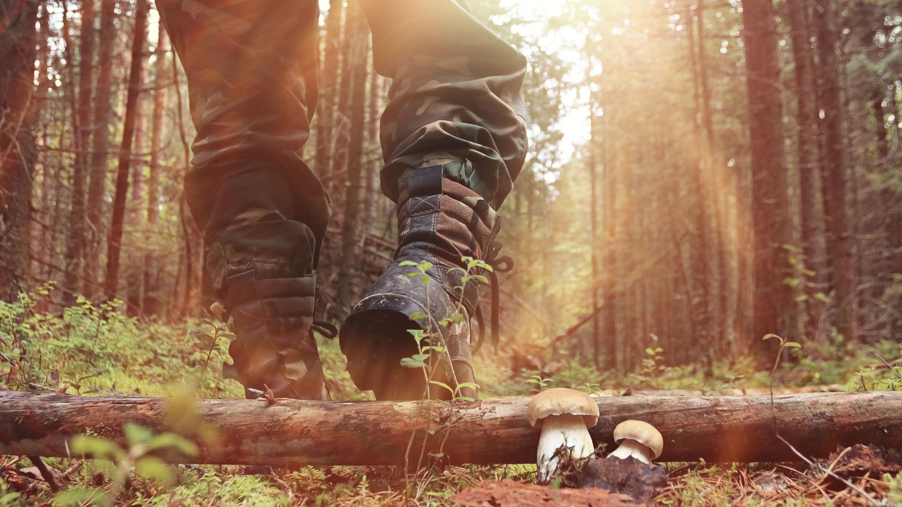

Ни шагу вперед
Мысли выстроились в логическую цепочку: «Главное не паниковать! Пока все нормально, если бы Бурый что-нибудь хотел от меня,
расстояние в 10 метров, он преодолел бы за мгновенье. Тааак…Теперь главное не раздражать его своим присутствием,
ведь он все еще стоит, не ушел, кто знает, что за мысли у него!».
Ивану сразу вспомнилась памятка или инструкция, сказанная ему от заядлого охотника Тимофевича, и ему ничего не оставалось,
как придержиться этой инструкции: не кричать, бежать и не лезть на дерево, все это медведь делает лучше людей. Медленно, без резких
движений, он попятился, нащупал большую толстую сосну и встал за нее. Затем за другую, третью… Десятую… Все это время медведь стоял на
том же месте и принюхивался, он потерял человека из виду.

Иван продолжал пятиться. Нащупывая дерево за деревом, он боялся развернуться. Казалось развернись он и хозяин леса тут же бросится в погоню.
Вдруг ладонь не с права ни с лева не нащупала дерева, ноги, потеряв равновесие, заскользили по вымоченной многодневным дождём земле. Падая, Иван услышал хруст и теряет сознание.